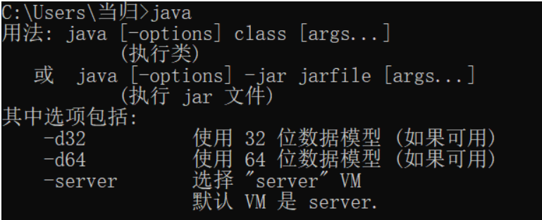
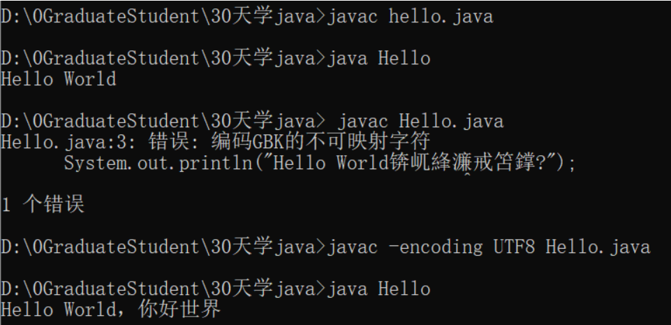

Day01 HelloWorld 要求：
在你的电脑上装好Jdk1.8 开发环境
请在记事本或者notepad++等编辑器写出完整的Java版本 Hello World代码
请在 cmd完成 HelloWorld.java 的编译和运行
可以在代码里打印中文，看看是否会出现报错
1、查看是否安装好jdk1.8环境，命令行输入java查看结果。

2、记事本写好代码
1 2 3 4 5 public class Hello {public static void main (String[] args) {"Hello World，你好世界" );
3、控制台编译成.class文件，指令javac Hello.java
注意：若有中文，指令需为javac -encoding UTF8 Hello.java
4、命令行输入java Hello查看结果

Day02 面向对象 要求：
学习4类8种 java数据类型
使用基本数据类型实现简单的四则运算，并打印结果，例如 int a = 1; int b = 1; int sum = a + b;
类型转换。例如 int转byte，要求全部8种数据类型都自己练习转换至少一次，看看是否报错。思考：short a = 1; short b = 2; 那么a+b 是什么类型
学习什么是实例变量、什么是静态变量
学习Java修饰符，private | protected | public，static、final、abstract、synchronized、transient、volatile 明确其使用场景和注意事项
设计一个Java对象class Animal，包含成员变量：名字 String name、年龄 int age、身高 float height，包含静态变量 String feature = “动物都会动”;
在main方法中实例化对象Animal，设置它的属性值
在CMD中打印Animal所有的属性值
8中Java数据类型 byte：
byte 数据类型是8位、有符号的，以二进制补码表示的整数；
最小值是-128（-2^7），最大值是127（2^7-1）。
short：
short 数据类型是 16 位、有符号的以二进制补码表示的整数。
int：
int 数据类型是32位、有符号的以二进制补码表示的整数。
long：
long 数据类型是 64 位、有符号的以二进制补码表示的整数；
默认值是0L；
例子：long a = 100000L; long b = -2000L。
float:
32位浮点型；
例子：float f1 = 234.5f。
double：
boolean：
只有两个取值：true or false；
默认值：flase。
char：
char 类型是一个单一的 16 位 Unicode 字符；
char 数据类型可以储存任何字符，例如：char letter = 'A'
类型转换 自动类型转换：
转换从低到高：byte,short,char—> int —> long—> float —> double
数据类型转换必须满足如下规则：1)在把容量大的类型转换为容量小的类型时必须使用强制类型转换; 2)转换过程中可能导致溢出或损失精度
强制类型转换：
例子：
1 2 3 4 5 6 7 public class QiangZhiZhuanHuan {public static void main (String[] args) {int i1 = 123 ;byte b = (byte )i1;"int强制类型转换为byte后的值等于" +b);
实例变量、静态变量 实例变量：
实例变量声明在一个类中，但在方法、构造方法和语句块之外；
实例变量在对象创建的时候创建，在对象被销毁的时候销毁；
实例变量的值应该至少被一个方法、构造方法或者语句块引用，使得外部能够通过这些方式获取实例变量信息；
实例变量可以声明在使用前或者使用后；
实例变量对于类中的方法、构造方法或者语句块是可见的。一般情况下应该把实例变量设为私有。通过使用访问修饰符可以使实例变量对子类可见。
静态变量：
在类中以 static 关键字声明，必须在方法之外；
静态变量在第一次被访问时创建，在程序结束时销毁。
二者区别：
实例变量属于某个对象的属性，必须创建了实例对象，其中的实例变量才会被分配空间，才能使用这个实例变量；
静态变量不属于某个实例对象，而是属于整个类。只要程序加载了类的字节码，不用创建任何实例对象，静态变量就回被分配空间，静态变量就可以被使用了；
实例变量必须创建对象后，才可以通过这个对象来使用；静态变量则可以直接使用类名来引用。
1 2 3 4 5 6 7 8 9 10 11 12 13 14 15 public class StaticTest {private static int staticInt = 2 ;private int random = 2 ;public StaticTest () {"staticInt = " +staticInt+" random = " +random);public static void main (String[] args) {StaticTest test = new StaticTest ();StaticTest test2 = new StaticTest ();
结果：
1 2 staticInt = 3 random = 3
java修饰符 访问修饰符：
修饰符
描述
public
该类可由其他类访问
default
该类只能由同一包中的类访问
修饰符
描述
public
所有类都可以访问该代码
private
代码只能在声明的类中访问
default
该类只能由同一包中的类访问
protected
代码可以在相同的包和子类中访问
非访问修饰符：
修饰符
描述
final
无法修改属性和方法
static
属性和方法对于类，而不是对象
abstract
只能在方法或类上使用
transient
序列化的对象包含被 transient 修饰的实例变量时，java 虚拟机(JVM)跳过该特定的变量
synchronized
声明的方法同一时间只能被一个线程访问
volatile
成员变量在每次被线程访问时，都强制从共享内存中重新读取该成员变量的值
练习：
1 2 3 4 5 6 7 8 9 10 11 12 13 14 15 16 17 18 19 20 21 22 23 24 25 26 27 28 29 30 public class Animal {private String name;private int age;private float height;public static String feature = "动物都会动" ;public String getName () {return name;public void setName (String name) {this .name = name;public int getAge () {return age;public void setAge (int age) {this .age = age;public float getHeight () {return height;public void setHeight (float height) {this .height = height;
1 2 3 4 5 6 7 8 9 10 11 12 13 14 public class Test {public static void main (String[] args) {Animal animal = new Animal ();2 );10 );"lili" );"动物的名字是" + animal.getName());"动物的年龄是" + animal.getAge());"动物的身高是" + animal.getHeight());
结果：
1 2 3 4 动物的名字是lili
Day03 基本语句 要求：
学习3种循环while、do…while…、for，已经跳出循环 break、跳过单次循环 continue
学习基本的条件语句 if、if…else…、if…else if…else，以及嵌套的条件语句 if() { if() { … } }
for循环和if条件语句结合使用 for() { if () { … } }
学习switch…case…，写出一个例子
本节非常重要，以后写代码基本就是用这些，每种语句至少练习3次以上
练习题（选做）：1.打印杨辉三角（5行）2. 判断0-1000以内的水仙花数，并打印 3. 打印九九乘法表
java增强for循环 例子：
1 2 3 4 5 6 7 8 9 10 11 12 13 14 15 16 public class Test {public static void main (String[] args) {int [] numbers = {10 , 20 , 30 , 40 , 50 };for (int x : numbers ){"," );"\n" );"James" , "Larry" , "Tom" , "Lacy" };for ( String name : names ) {"," );
break和continue
break：break 跳出最里层的循环，并且继续执行该循环下面的语句；
continue：跳过这一次循环，让程序立刻跳转到下一次循环的迭代。
switch…case… 语法：
1 2 3 4 5 6 7 8 9 10 11 switch (expression){case value :break ; case value :break ; default :
例子：
1 2 3 4 5 6 7 8 9 10 11 12 13 14 15 public class Test {public static void main (String args[]) {int i = 5 ;switch (i){case 0 :"0" );case 1 :"1" );case 2 :"2" );default :"default" );
输出结果：
练习题 1、打印杨辉三角
1 2 3 4 5 6 7 8 9 10 11 12 13 14 15 16 17 public class Test {public static void main (String[] args) {int [][]arr = new int [5 ][5 ];for (int i = 0 ; i < 5 ; i++) {for (int j = 0 ; j <= i; j++) {if (j == 0 || i == j){1 ;else {1 ][j-1 ] + arr[i-1 ][j];
结果：
2、判断0-1000以内的水仙花数，并打印
1 2 3 4 5 6 7 8 public class Test {public static void main (String[] args) {for (int i = 100 ; i < 1000 ; i++) {if (Math.pow(i/100 , 3 ) + Math.pow(i/10 %10 , 3 ) + Math.pow(i%10 , 3 ) == i)
结果：
3、打印九九乘法表
1 2 3 4 5 6 7 8 9 10 public class Test {public static void main (String[] args) {for (int i = 1 ; i <= 9 ; i++) {for (int j = 1 ; j <= i; j++) {"*" + j + "=" + i * j + " " );
结果：
1 2 3 4 5 6 7 8 9 1 *1 =1 2 *1 =2 2 *2 =4 3 *1 =3 3 *2 =6 3 *3 =9 4 *1 =4 4 *2 =8 4 *3 =12 4 *4 =16 5 *1 =5 5 *2 =10 5 *3 =15 5 *4 =20 5 *5 =25 6 *1 =6 6 *2 =12 6 *3 =18 6 *4 =24 6 *5 =30 6 *6 =36 7 *1 =7 7 *2 =14 7 *3 =21 7 *4 =28 7 *5 =35 7 *6 =42 7 *7 =49 8 *1 =8 8 *2 =16 8 *3 =24 8 *4 =32 8 *5 =40 8 *6 =48 8 *7 =56 8 *8 =64 9 *1 =9 9 *2 =18 9 *3 =27 9 *4 =36 9 *5 =45 9 *6 =54 9 *7 =63 9 *8 =72 9 *9 =81
Day04 包装类、数组 要求：
学习8种基本数据的包装类，学习装箱、拆箱，学习包装类常用的方法
学习Math类、Date类、Character类、随机数Random、Calendar类等常用类
学习数组 ，二维数组、数组排序、复制数组、Arrays工具类使用
学习String类（非常重要）学习他的常用的方法，例如 equals()、compareTo() 等等，多多练习
学习StringBuilder、StringBuffer，比较它们的不同，使用它们拼接字符串和变量
（选做）封装一个工具类StringUtils.java，实现字符串判断空的方法(公共静态方法)
（选做）使用Calendar类打印本月的日历
八种数据的包装类、自动装箱和拆箱
byte => java.lang.Byte （父类Number）
short => java.lang.Short（父类Number）
int => java.lang.Integer（父类Number）
long => java.lang.Long（父类Number）
float => java.lang.Float（父类Number）
double => java.lang.Double（父类Number）
boolean => java.lang.Boolean（父类Object）
char => java.lang.Character（父类Object）
自动装箱： 基本数据类型转化为包装类。自动拆箱： 包装类自动转化为基本数据类型
例子：
1 2 3 4 5 6 7 8 9 10 public class Ints {public static void main (String[] args) {Integer x = 123 ;int y = x;
1 2 3 4 5 6 7 public class Ints {public static void main (String [] argsInteger x = 123 ;System .out .println (x+1 );
Math类 java.lang.Math类包含用于执行基本数学运算的方法，如初等指数、对数、平方根和三角函数。
常用方法：
abs(…)：绝对值，返回传入值的绝对值。
pow(double a, double b)：求幂，返回a的b次方。
ceil(double a)：向上取整，返回大于等于参数的最小的整数。
floor(double a)：向下取整，返回小于等于参数的最大的整数。
round(…)：四舍五入，返回最接近参数的整数。(相当于四舍五入方法)。
sqrt(double a)：求开方，返回double类型的四舍五入后的平方根。
random()：求随机数，返回一个0.0-1.0的随机数。大于等于0而小于1。
max(…)：求两个数的最大值，返回传入两个参数最大的那个。
min(…)：求两个数的最小值，返回传入两个参数最小的那个。
Date类、Calender类 Date类：
1、构造方法
Date()：此种形式表示分配 Date 对象并初始化此对象，以表示分配它的时间（精确到毫秒），使用该构造方法创建的对象可以获取本地的当前时间。
Date(long date)：此种形式表示从 GMT 时间（格林尼治时间）1970 年 1 月 1 日 0 时 0 分 0 秒开始经过参数 date 指定的毫秒数。
DateFormat类：
DateFormat是日期时间格式化子类的抽象类，它以与语言无关的方式格式化并解析日期和时间。
是抽象类，所以使用其子类SimpleDateFormat
例子1（默认格式）：
1 2 3 4 5 6 7 8 9 10 11 12 13 14 15 16 17 18 19 package com.manman.cn;import java.text.SimpleDateFormat;import java.util.Date;public class DateFormatDemo {public static void main (String[] args) {new Date ();new SimpleDateFormat ();String string = sdf.format(de);
例子2：
1 2 3 4 Date de=new Date ();new SimpleDateFormat ("yyyy年MM月dd日HH:mm:ss" );
Calender类：
Calendar类是一个抽象类，在实际使用时实现特定的子类的对象，创建对象的过程对程序员来说是透明的，只需要使用getInstance方法创建即可。
创建一个代表系统当前日期的Calendar对象：
1 Calendar c = Calendar.getInstance();
创建一个指定日期的Calendar对象:
1 2 3 Calendar c1 = Calendar.getInstance();2009 , 6 -1 , 12 );
如果只设定某个字段，例如日期的值，则可以使用如下set方法：
1 public void set (int field,int value)
例如：
1 2 c1.set(Calendar.DATE,10 ); 2008 );
Add设置：
1 2 3 Calendar c1 = Calendar.getInstance();10 );10 );
Calender类对象信息的获得：
1 2 3 4 5 6 7 8 9 10 11 12 13 14 15 Calendar c1 = Calendar.getInstance();int year = c1.get(Calendar.YEAR);int month = c1.get(Calendar.MONTH) + 1 ;int date = c1.get(Calendar.DATE);int hour = c1.get(Calendar.HOUR_OF_DAY);int minute = c1.get(Calendar.MINUTE);int second = c1.get(Calendar.SECOND);int day = c1.get(Calendar.DAY_OF_WEEK);
数组 创建数组：
1 dataType[] arrayRefVar = new dataType [arraySize];
或
1 dataType[] arrayRefVar = {value0, value1, ..., valuek};
for-each循环：
例子：
1 2 3 4 5 6 7 8 9 10 public class TestArray {public static void main (String[] args) {double [] myList = {1.9 , 2.9 , 3.4 , 3.5 };for (double element: myList) {
数组作为函数的参数：
例子：
1 2 3 4 5 public static void printArray (int [] array) {for (int i = 0 ; i < array.length; i++) {" " );
1 printArray(new int []{3 , 1 , 2 , 6 , 4 , 2 });
Array类：
java.util.Arrays 类能方便地操作数组，它提供的所有方法都是静态的。
具有以下功能：
给数组赋值：通过 fill 方法。
对数组排序：通过 sort 方法,按升序。
比较数组：通过 equals 方法比较数组中元素值是否相等。
查找数组元素：通过 binarySearch 方法能对排序好的数组进行二分查找法操作。
序号
方法和说明
1
public static int binarySearch(Object[] a, Object key) 用二分查找算法在给定数组中搜索给定值的对象(Byte,Int,double等)。数组在调用前必须排序好的。如果查找值包含在数组中，则返回搜索键的索引；否则返回 (-(插入点 ) - 1)。
2
public static boolean equals(long[] a, long[] a2) 如果两个指定的 long 型数组彼此相等 ，则返回 true。如果两个数组包含相同数量的元素，并且两个数组中的所有相应元素对都是相等的，则认为这两个数组是相等的。换句话说，如果两个数组以相同顺序包含相同的元素，则两个数组是相等的。同样的方法适用于所有的其他基本数据类型（Byte，short，Int等）。
3
public static void fill(int[] a, int val) 将指定的 int 值分配给指定 int 型数组指定范围中的每个元素。同样的方法适用于所有的其他基本数据类型（Byte，short，Int等）。
4
public static void sort(Object[] a) 对指定对象数组根据其元素的自然顺序进行升序排列。同样的方法适用于所有的其他基本数据类型（Byte，short，Int等）。
复制数组：
在java中实现数组复制有以下四种方法：
1 Arrays.copyOf(dataType[] srcArray,int length);
其中，srcArray 表示要进行复制的数组，length 表示复制后的新数组的长度。
Arrays 类的 copyOfRange() 方法
1 Arrays.copyOfRange(dataType[] srcArray,int startIndex,int endIndex)
1 System.arraycopy(dataType[] srcArray,int srcIndex,int destArray,int destIndex,int length)
其中，srcArray 表示原数组；srcIndex 表示原数组中的起始索引；destArray 表示目标数组；destIndex 表示目标数组中的起始索引；length 表示要复制的数组长度。
clone() 方法也可以实现复制数组。该方法是类 Object 中的方法，可以创建一个有单独内存空间的对象。因为数组也是一个 Object 类，因此也可以使用数组对象的 clone() 方法来复制数组。
clone() 方法的返回值是 Object 类型，要使用强制类型转换为适当的类型。 其语法形式比较简单：
1 int [] targetArray=(int [])sourceArray.clone();
总结： 以上几种方法都是浅拷贝（浅复制）。浅拷贝只是复制了对象的引用地址，两个对象指向同一个内存地址，所以修改其中任意的值，另一个值都会随之变化。深拷贝是将对象及值复制过来，两个对象修改其中任意的值另一个值不会改变。
String类 创建字符串的两种方式：
1 2 String s2 = "Runoob" ; String s4 = new String ("Runoob" );
字符串长度：
String 类的一个访问器方法是 length() 方法，它返回字符串对象包含的字符数。
连接字符串：
1 string1.concat(string2);
返回 string2 连接 string1 的新字符串。
比较字符串：
equals() 方法将逐个地比较两个字符串的每个字符是否相同。如果两个字符串具有相同的字符和长度，它返回 true，否则返回 false。对于字符的大小写，也在检查的范围之内。
compareTo() 方法用于按字典顺序比较两个字符串的大小，该比较是基于字符串各个字符的 Unicode 值。如果按字典顺序 str 位于 otherster 参数之前，比较结果为一个负整数；如果 str 位于 otherstr 之后，比较结果为一个正整数；如果两个字符串相等，则结果为 0。
提示：如果两个字符串调用 equals() 方法返回 true，那么调用 compareTo() 方法会返回 0。
例子：
1 2 3 4 5 6 7 8 9 public static void main (String[] args) {String str = "A" ;String str1 = "a" ;"str=" + str);"str1=" + str1);"str.compareTo(str1)的结果是：" + str.compareTo(str1));"str1.compareTo(str)的结果是：" + str1.compareTo(str));"str1.compareTo('a')的结果是：" + str1.compareTo("a" ));
结果：
1 2 3 4 5 str = ATo(str1 ) 的结果是：-32 To(str ) 的结果是：32 To('a ') 的结果是：0
StringBuffer 和 StringBuilder类 当对字符串进行修改的时候，需要使用 StringBuffer 和 StringBuilder 类。
和 String 类不同的是，StringBuffer 和 StringBuilder 类的对象能够被多次的修改，并且不产生新的未使用对象。
由于 StringBuilder 相较于 StringBuffer 有速度优势，所以多数情况下建议使用 StringBuilder 类。
练习题 1、封装一个工具类StringUtils.java，实现字符串判断空的方法(公共静态方法)
1 2 3 4 5 6 7 8 public class StringUtils {public static boolean isEmpty (String str) {if (str == null ||str.length() == 0 ){return true ;return false ;
2、使用Calendar类打印本月的日历
1 2 3 4 5 6 7 8 9 10 11 12 13 14 15 16 17 18 19 20 21 22 23 24 25 26 27 28 29 30 31 32 33 import java.util.Calendar;public class Test {public static void main (String[] args) {Calendar calendar = Calendar.getInstance();int month = calendar.get(Calendar.MONTH) + 1 ;int year = calendar.get(Calendar.YEAR);1 , 1 );int startDay = calendar.get(Calendar.DAY_OF_WEEK); int count = startDay - 1 ; int maxDay = maxDayInMonth(year, month);"Sun Mon Tue Wed Thu Fri Sat" );for (int i = 1 ; i < startDay; i++) {"%4s" , " " );for (int i = 1 ; i <= maxDay; i++) {"%3d%s" , i, " " ); if (count >= 7 ) { 0 ;'\n' );public static int maxDayInMonth (int year, int month) {int max = 30 ;if (month == 1 | month == 3 | month == 5 | month == 7 | month == 8 | month == 10 | month == 12 ) max = 31 ;else if (month == 2 ) max = 28 ;else if (month == 2 & (year % 4 == 0 ) && (year % 100 != 0 ) || (year % 400 == 0 )) max = 29 ;return max;
结果：
1 2 3 4 5 6 Sun Mon Tue Wed Thu Fri Sat 1 2 3 4 5 6 7 8 9 10 11 12 13 14 15 16 17 18 19 20 21 22 23 24 25 26 27 28 29 30
Day05 深入类和对象 要求：
学习包 package，给你的类指定包名
学习面向对象的三大特性：封装、继承、多态
学习抽象类 abstract class、内部类 inner class
学习接口interface，了解接口的特性，接口默认方法等
了解什么是代码块、了解如何进行类属性初始化
学习方法，构造方法、静态方法、实例方法、方法重载、方法重写，方法传参
学习this关键字，通过this访问属性、访问构造方法；学习 super关键字，通过super调用父类的属性和方法
学习什么是枚举类型，枚举一个类型枚举 CategoryEnum.java 设置属性：FRUIT、CLOTHES、PHONE、BOOKS
（选做）写3种单例模式
抽象类
抽象类除了不能实例化对象之外，类的其它功能依然存在，成员变量、成员方法和构造方法的访问方式和普通类一样。
由于抽象类不能实例化对象，所以抽象类必须被继承，才能被使用。也是因为这个原因，通常在设计阶段决定要不要设计抽象类。
在 Java 中抽象类表示的是一种继承关系，一个类只能继承一个抽象类，而一个类却可以实现多个接口。
抽象类的子类必须给出抽象类中的抽象方法的具体实现，除非该子类也是抽象类。
内部类 内部类： 所谓内部类就是在一个类内部进行其他类结构的嵌套操作。
例子：
1 2 3 4 5 6 7 8 9 10 11 12 13 14 15 16 17 18 19 20 21 22 23 24 25 26 27 28 29 30 class Outer {private String str = "外部类中的字符串" ;class Inner {private String inStr= "内部类中的字符串" ;public void print () {public void fun () {Inner in = new Inner ();public class Test {public static void main (String[] args) Outer out = new Outer ();
结果：
在外部类外部创建非静态内部类：
语法： 外部类.内部类 内部类对象 = new 外部类().new 内部类();举例： Outer.Inner in = new Outer().new Inner();
在外部类外部创建静态内部类：
语法： 外部类.内部类 内部类对象 = new 外部类.内部类();举例： Outer.Inner in = new Outer.Inner();
在外部类内部创建内部语法类：
在外部类内部创建内部类，就像普通对象一样直接创建：Inner in = new Inner();
内部类的分类：
成员内部类内部不允许存在任何static变量或方法 正如成员方法中不能有任何静态属性 （成员方法与对象相关、静态属性与类有关）。
成员内部类是依附外部类的，只有创建了外部类才能创建内部类。
1 2 3 4 5 6 7 8 9 10 11 12 13 14 15 16 17 class Outer {private String name = "test" ;public static int age = 20 ;class Inner {public void fun () public class Test {public static void main (String [] args)
静态内部类不可以使用任何外部类的非static类（包括属性和方法），但可以存在自己的成员变量。
1 2 3 4 5 6 7 8 9 10 11 12 13 14 15 16 17 18 19 class Outer {public String name = "test" ;private static int age = 20 ;static class Inner {private String name;public void fun () public class Test {public static void main (String [] args) Inner in = new Outer .Inner();
方法内部类顾名思义就是定义在方法里的类。
方法内部类不允许使用访问权限修饰符（public、private、protected）均不允许。
方法内部类对外部完全隐藏，除了创建这个类的方法可以访问它以外，其他地方均不能访问 (换句话说其他方法或者类都不知道有这个类的存在)方法内部类对外部完全隐藏，出了创建这个类的方法可以访问它，其他地方均不能访问。
方法内部类如果想要使用方法形参，该形参必须使用final声明（JDK8形参变为隐式final声明）。
1 2 3 4 5 6 7 8 9 10 11 12 13 14 15 16 17 18 19 20 class Outer {private int num = 5 ;public void dispaly (final int temp) public class Inner {new Inner ().fun();public class Test {public static void main (String[] args) Outer out = new Outer ();2 );
匿名内部类就是一个没有名字的方法内部类 ，因此特点和方法与方法内部类完全一致，除此之外，还有自己的特点：
1 2 3 4 5 6 7 8 9 10 11 12 13 14 15 16 17 18 19 20 21 22 23 24 25 26 27 28 29 interface MyInterface {void test () ;class Outer {private int num = 5 ;public void dispaly (int temp) new MyInterface ()public void test () "匿名实现MyInterface接口" );public class Test {public static void main (String[] args) Outer out = new Outer ();3 );
内部类与外部类的关系：
对于非静态的内部类，内部类的创建依赖外部类的实例对象，在没有外部类实例之前是无法创建内部类的。
内部类可以直接访问外部类的元素 （包括私有域）—外部类在内部类之前创建，创建内部类时会将外部类的对象传入
1 2 3 4 5 6 7 8 9 10 11 12 13 14 15 16 17 18 19 20 21 22 23 24 25 26 27 28 29 class Outer {private String msg;private int age;class Inner {public void dispaly () "test" ;20 ;public void test () Inner in = new Inner ();public class Test {public static void main (String[] args) Outer out = new Outer ();
输出结果：
外部类可以通过内部类的引用间接访问内部类元素 – -要想访问内部类属性，必须先创建内部类对象
1 2 3 4 5 6 7 8 9 10 11 12 13 14 15 16 17 18 19 20 21 class Outer {public void dispaly () Inner in = new Inner ();class Inner {public void dispaly () "内部类" );public class Test1 {public static void main (String[] args) Outer out = new Outer ();
代码块 1、局部代码块：在方法中出现，用于限定变量生命周期，及早释放，提高内存利用率。
例子：
1 2 3 4 5 6 7 8 9 10 public class Test1 {public static void main (String[] args) {int n = 100 ;
2、静态代码块
必须有static修饰，必须放在类下。与类一起加载执行。并且静态代码块执行一次
1 2 3 4 5 6 7 8 9 10 11 12 13 14 15 public class Test2 {public static String name;static {"张三" ;"静态代码块执行..." );public static void main (String[] args) {"main方法执行..." );
结果：
1 2 3 静态代码块执行...
特点：
每次执行类，加载类的时候都会先执行静态代码块一次。
静态代码块是自动触发执行的，只要程序启动静态代码块就会先执行一次。
在启动程序之前可以做资源的初始化，一般用于初始化静态资源。
3、实例代码块
没有static修饰，必须放在类下。与对象初始化一起加载，即每次调用构造方法 都会执行，并且在构造方法前执行。
1 2 3 4 5 6 7 8 9 10 11 12 13 14 15 16 17 18 19 20 21 22 23 24 25 26 27 public class Test3 {private String name;"实例代码块执行..." );"张三" ;public Test3 () {"无参构造方法执行..." );public Test3 (String name) {"有参构造方法执行..." );this .name = name;public static void main (String[] args) {Test3 t1 = new Test3 ();Test3 t2 = new Test3 ("李四" );
1 2 3 4 5 实例代码块执行...
枚举 实例：
1 2 3 4 5 6 7 8 9 10 11 12 13 14 enum Color public class Test public static void main (String[] args) Color c1 = Color.RED;
内部类中使用枚举：
1 2 3 4 5 6 7 8 9 10 11 12 13 14 public class Test enum Color public static void main (String[] args) Color c1 = Color.RED;
以上的枚举类 Color 转化在内部类实现：
1 2 3 4 5 6 class Color public static final Color RED = new Color ();public static final Color BLUE = new Color ();public static final Color GREEN = new Color ();
迭代枚举元素：
1 2 3 4 5 6 7 8 9 10 11 enum Color public class MyClass {public static void main (String[] args) {for (Color myVar : Color.values()) {
Day06 异常 要求：
学习异常处理，了解异常的继承图、自定义异常，多多练习
常见的异常：RuntimeException、NullpointException、FileNotFoundException等等
区分 Error和Exception
自己模拟各种常见的异常，然后练习
自己在程序中抛出异常，在其调用类捕获异常，打印异常堆栈，查看异常的堆栈的结构
Error：是程序中无法处理的错误，表示运行应用程序中出现了严重的错误。此类错误一般表示代码运行时JVM出现问题。通常有Virtual MachineError（虚拟机运行错误）、NoClassDefFoundError（类定义错误）等。比如说当jvm耗完可用内存时，将出现OutOfMemoryError。此类错误发生时，JVM将终止线程。非代码性错误。因此，当此类错误发生时，应用不应该去处理此类错误。
Exception：：程序本身可以捕获并且可以处理的异常。
运行时异常(不受检异常)：RuntimeException类极其子类表示JVM在运行期间可能出现的错误。编译器不会检查此类异常，并且不要求处理异常，比如用空值对象的引用（NullPointerException）、数组下标越界（ArrayIndexOutBoundException）。此类异常属于不可查异常，一般是由程序逻辑错误引起的，在程序中可以选择捕获处理，也可以不处理。
非运行时异常(受检异常)：Exception中除RuntimeException极其子类之外的异常。编译器会检查此类异常，如果程序中出现此类异常，比如说IOException，必须对该异常进行处理，要么使用try-catch捕获，要么使用throws语句抛出，否则编译不通过。
异常的处理：
抛出异常：throw，throws
捕获异常：try，catch，finally
throw用在方法内，用来抛出一个异常对象，将这个异常对象传递到调用者处，并结束当前方法的执行。
使用的格式：
例子：
1 2 3 4 5 6 7 8 9 10 11 12 13 public class DemoThrow {public static void main (String[] args) {int a = DemoThrow.div(4 ,0 );public static int div (int a,int b) if (b==0 )throw new ArithmeticException ("异常信息：除数不能为0" );return a/b;
运用于方法声明之上，用于表示当前方法不处理异常，而是提醒该方法的调用者来处理异常
使用格式：
1 修饰符 返回值类型 方法名（参数） throws 异常类名1 ，异常类名2 ... { }
例子：
1 2 3 4 5 6 7 8 9 10 11 12 13 14 15 import java.io.FileInputStream;import java.io.FileNotFoundException;import java.io.InputStream;public class DemoThrows {public static void main (String[] args) throws FileNotFoundException{public static void readFile () throws FileNotFoundException {InputStream is = new FileInputStream ("E:/iodemo/ch01.txt" );
1 2 3 4 5 6 7 8 9 10 try {catch (SomeException e) {finally {
例子：
1 2 3 4 5 6 7 8 9 10 11 12 13 14 15 16 17 18 19 20 21 22 import java.io.FileInputStream;import java.io.FileNotFoundException;import java.io.InputStream;public class DemoTryCatch {public static void main (String[] args) {try {catch (FileNotFoundException e) {"系统找不到指定的路径" );"后续代码" );public static void readFile () throws FileNotFoundException {InputStream is = new FileInputStream ("E:/iodemo/ch01.txt" );
除了JDK定义好的异常类外，在开发过程中根据业务的异常情况自定义异常类。
1 2 3 4 5 6 7 8 9 10 11 12 13 14 15 package com.example.springbootmybatis;public class UserNotExistsException extends RuntimeException {public UserNotExistsException () {super ();public UserNotExistsException (String message) {super (message);
Day07 IO
学习File对象，new File()，获取File的路径等
学习输入流：InputStream，输出流：OutputStream，以及其子类
学习如何打开、关闭流
学习字节流、字符流、缓冲流、对象流
学习Scanner、标准输入、输出流
练习：1. 对文件夹和文件进行递归拷贝 2. 打印文本文件里所有的文字（含中文）
Java的File对象 创建File对象
构造 File 对象时，既可以传入绝对路径，也可以传入相对路径。绝对路径是以根目录开头的完整路径，例如：
1 File f = new File ("C:\\Windows\\notepad.exe" );
传入相对路径时，相对路径前面加上当前目录就是绝对路径：
1 2 3 4 File f1 = new File ("sub\\javac" ); File f3 = new File (".\\sub\\javac" ); File f3 = new File ("..\\sub\\javac" );
可以用 . 表示当前目录，.. 表示上级目录。
获取文件信息：
返回
方法
说明
String
getName
获取文件名称
String
getParent
获取文件的父路径字符串
String
getPath
获取文件的相对路径字符串
String
getAbsolutePath
获取文件的绝对路径字符串
boolean
exists
判断文件或者文件夹是否存在
boolean
isFile
判断是不是文件类型
boolean
isDirectory
判断是不是文件夹类型
boolean
delete
删除文件或文件夹，如果删除成功返回结果为true
boolean
mkdir
创建文件夹，创建成功返回true
String[ ]
list
获取文件夹中的文件和子文件夹的名称，并存放到字符串数组中
long
length
获取文件的长度
例子：
1 2 3 4 5 6 7 8 9 10 11 12 13 14 15 16 17 18 19 20 21 22 23 24 25 26 27 28 29 30 31 32 package com.zch.io;import java.io.File;import java.util.Date;public class FileInfo {public static void main (String[] args) {String filePath = "src/com/zch/io/FileInfo.java" ;File file = new File (filePath);"文件名称:" + file.getName());"文件是否存在：" + file.exists());"文件的相对路径：" + file.getPath());"文件的绝对路径：" + file.getAbsolutePath());"是否为可执行文件：" + file.canExecute());"文件可以读取：" + file.canRead());"文件可以写入：" + file.canWrite());"文件上级路径：" + file.getParent());"文件大小：" + file.length() + "B" );"文件最后修改时间：" + new Date (file.lastModified()));"是否文件类型：" + file.isFile());"是否为文件夹：" + file.isDirectory());